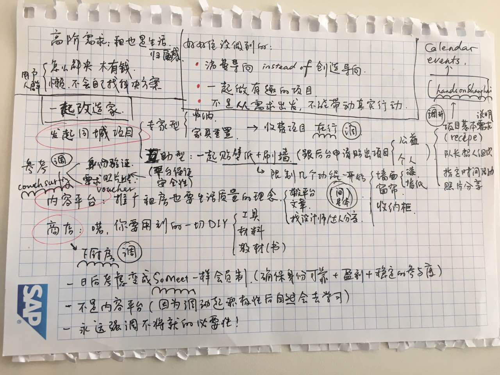
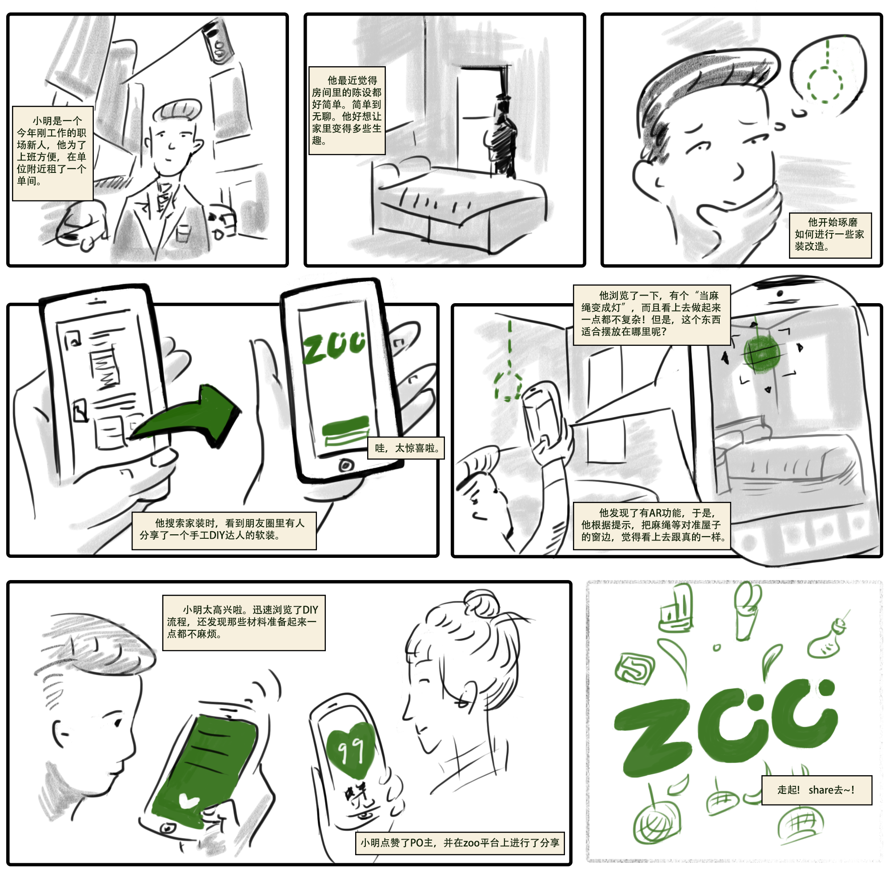
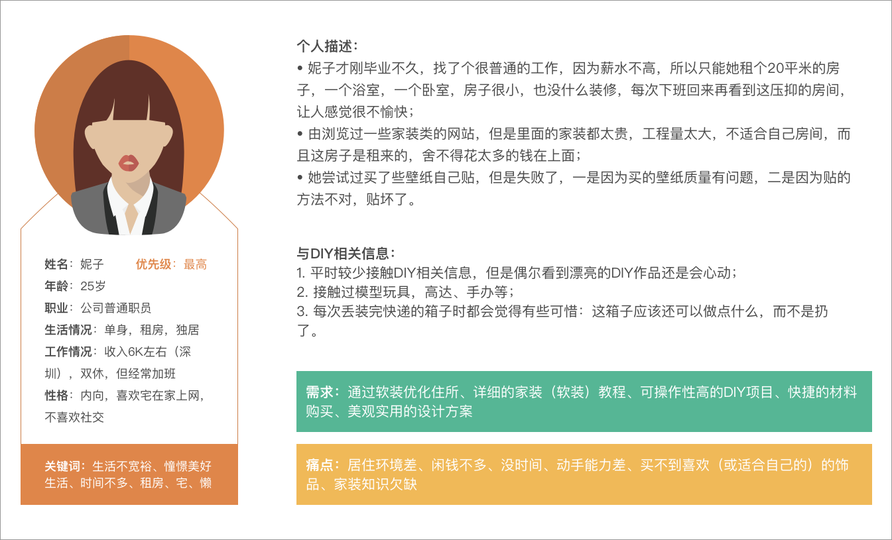
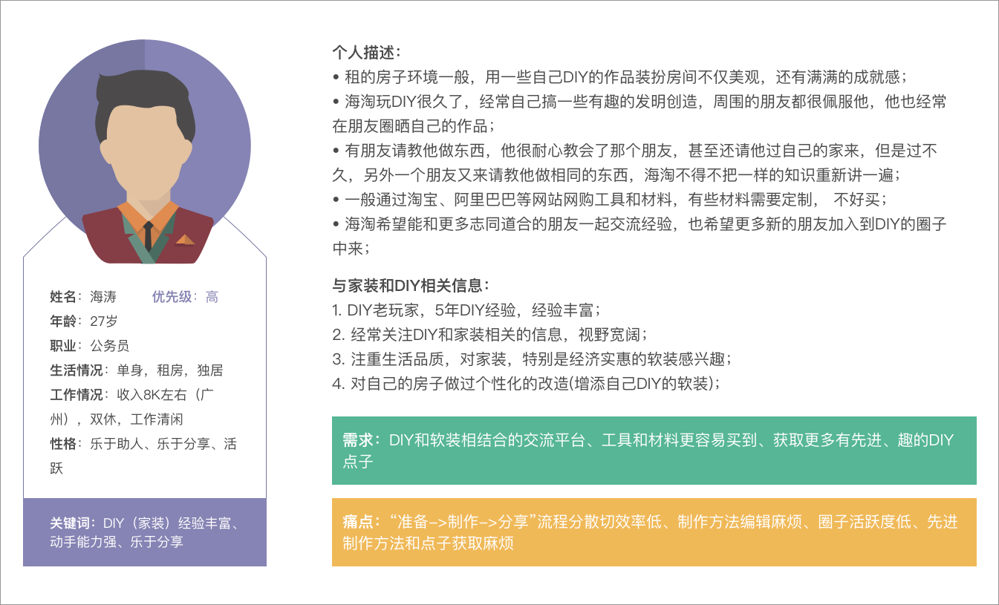

ZOO 是一款为喜欢DIY的用户设计的家装DIY应用，鼓励将自己的居住空间作为实验田地，鼓励大家发布手工改造居住空间的方案，上传作品后，APP将为便于展示的DIY成品添加AR展示功能，便于其他用户在自己的真实环境里比照参考。我们强调环保和旧物利用，鼓励大家用最简单的材料、最低的造价来改善自己的居住环境。
项目介绍
这是UX学习课程中的一个小组项目，要求在2星期内设计一款移动端产品，范围不限，在现有技术范围内。我们小组成员一共8人，涉及专业领域包括心理学、计算机、工业设计等等。
我的角色
● 团队小组长，协调各成员，规划项目步骤，分配工作
● 负责动效设计，设计关键功能（AR、登陆）的动效效果
● 交互设计师，参与调研、信息架构、原型绘制等一系列工作
交付物
● 调研报告
● 信息架构
● 高、低保真原型
灵感来源
我们小组在前期头脑风暴时有很多想法，但最终大家都对一个idea表示了极强的兴趣：动手改造家。之所以引起共鸣，是因为每个人身边有很多这样的朋友，在租住房屋，或二手房改造时希望把家打造得更加温馨有特色，但因为种种顾虑（造价、房主意见、信息来源有限等）常常拖延行动。近两年出现的一些应用（如好好住、家的要素）虽然很大程度上提供了一些参考资源，但想要装饰出如图片上一样的美观度并满足实用性，一来造价不菲，二来无法确认单品在家中摆放是否协调。我们带着这样的需求关注点，开始了我们的调研。
需求挖掘
问卷调查、用户访谈、故事版、人物画像
❖ 问卷调查
为了对我们的目标用户人群进行定量的初步了解，我们制定了问卷，试图通过问卷调查来进一步获取用户客观画像和需求。
在回收的107份有效问卷中：
88%的人年龄在20～30岁之间

男:女

60%的人月薪在3～10K范围内

74%的人的居住面积在30及30平米以下

74%的人只愿意花低于房屋租金一半的钱在软装上

50%的人对现有房屋装修不满意并且觉得有必要通过软装来提高居住品质
舒适度为人们最关注的装修问题
微博、微信等社交媒体和一些装修相关网站及app是用户获取装修相关资讯的主要途径
各类资讯中，人们认为“专业设计建议”、“网友经验分享”、“装修风格讲解”、“软装单品链接”对自己更有帮助
❖ 用户访谈
顺着“微”装修、性价比、手动改造家等关键词，发散到了DIY、废物改造等家装形式上，为了更深入地了解用户的需求和使用场景开展了用户访谈。
访谈主题
◆ 用户对小范围装修的需求强度。
◆ 对小范围装修的装修形式的需求。
目标人群
◆ 租房及自购房不久的年轻人群
◆ DIY达人、家装达人
访谈数据
◆ 数据： 17 名受访者
◆ 年龄： 16名21- 30岁的年轻人，1名50+的中老年人
◆ 职业：学生，设计师，教师，辅导员，私企公司职员，公务员
需求：
租房用户与买房的用户对家装的认知区别：租房用户比买房用户更愿意采用轻便装修素材；新房用户（已经装修完的）软装需求程度较低
启示：进一步锁定目标用户
● 买房的装修肯定比租房用心，买房会考虑房型，租房主要考虑位置和租金，租房的家装会选择比较轻便和性价比高的，性价比才是最重要的！便宜又好用才是第一生产力！
… …
租房、购房用户具有“简易装修（便于拆卸）”的需求，目的是改善美观、增强功能
启示：软装的目的以美观为主、兼顾功能
● 希望有人来给我贴墙纸画框，非常有需求改善美观，不知道哪里买，宜家好远，听说可以买仿造画，但没有途径。
● 我现在就很希望衣柜能大一点；还有在阳台挂衣服不是很方便能不能在家里怎么改变一点方便挂衣服；朋友来了不够坐能不能有什么办法解决。
… …
住户对家装DIY的需求， 对DIY样例有需求，包括对家装风格的要求
启示：需要提供用户一些软装的模板，DIY模板
● 非常非常感兴趣DIY，已有家具不喜欢，新的带不走，省钱特别适合租房。没有弄的原因：不会弄。
● 最想学的是手工、改造，比方桌面包布。目标是更协调，不知道家具怎么摆放更合理。想学习家具摆放的格局 ，家里不需要买东西了，太多东西。
● 对风格的理解是款式的差异（如田园意味着花纹花边、北欧是棱角鲜明）
● 不愿意做手工，因为没时间、不会做、没地方买材料。
● 平时都比较忙，完完全全DIY一个新的家具的可能性不是很大；和刚才一样，如果有现成的家装包和说明的话还是可以的，因为确实有些耗时耗力；其实更倾向于自己动手改造现有家具，比如家里地板不好，衣柜不够用，能不能用自己动手做改造让它变得更好？有一步步的详细说明当然是最好的啦，有购买链接更好。
… …
对于软装、小范围装修会关注网友建议，并考虑跟空间的搭配
启示：采用AR增强现实来更好的代替真实的装修布局体验
● 买东西前一般会参考网上网友的装修建议，然后去实体店买，因为这样才能真实了解到材料的质地、质量、也不会有色差，和自己的房间更配。
… …
对软装的材料要求：环保简单
启示：通过软装链接材料卖家，进行销售，带动产业链。
● 简洁欢快年轻人大部分喜欢的 简单设计感 日剧风 。
● 不能接受红木 。
● 环保居住环境第一位 美观第二 。
● 空间利用 不追求奢华 追求创意和特色 。
● 材质耐用 。
● 用承受范围内最好的东西 。
… …
小范围装修成本控制在月薪左右
启示：同需求5
● 一年拿两个月工资改两次。
● 每年愿意投1个月工资在租房的居住环境改善，随租金、居住时长、房子状况变化。
… …
DIY达人展示自己的舞台
启示：通过DIY达人分享自己的经验来指导小白用户，创造良好的氛围。
● 我自己玩DIY也有4、5年时间了，平时也经常看各种（DIY相关的）贴吧和论坛，其实每个人平时生活中都会遇到各种不满和不便，能想到办法解决就是一个创意产品，作品分享出来获得大家的认可也是挺有成就感的一件事。
… …
解决方案：
做完问卷调研和用户访谈后，我们通过视频会议的形式对收集到的需求进行了整理，如图：
接着我们将需求进行了归结和总结：
1. 访谈帮助了我们缩小“小范围装修”的主题：简易装修（方便拆卸），以主要改善美观，次要突出使用功能为目的。
2. 缩小了“小范围装修”的设计形式：以家居DIY为主，包括了废弃物改造。
3. 目标用户群：定位在针对租房年轻人群与住自购房时间较久的年轻人群（分小白用户和达人用户）。
4. 根据用户有家具DIY形式下的软装需求，但是却没有自己满意的想法。我们将提供一份可以交流互动的DIY平台，
让用户相互之间分享自己的DIY设计方案。
5. 具体在DIY交流平台中，根据用户的“空间匹配”需求，我们提供了AR增强现实的设计。
6. 根据用户对材料的需求，我们提供了一键购买的服务。
7. 设计奖励机制，在平台内以虚拟金币或代金券的形式奖励发布优质内容的用户，金币可用于在商场抵现金使用。
最后，我们将app定位为 ：
一款以DIY为主要形式的（小范围）家装交流平台。
❖ 故事板
AR功能介绍：
为了让家装DIY在使用上激发用户的动手和设计的兴趣，也为缩短用户的理想空间与人的距离，ZOO在操作里添加了AR功能。
用户可以在AR功能中得到两个使用体验。用户可以直接在AR界面里对感兴趣的并收藏过的帖子的实体装饰效果进行综合空间装饰搭配，同时AR功能给单个DIY帖子的实现带来了模拟装饰效果的功能。
❖ 用户画像
小白获取帮助型
达人分享经验型
原型绘制
信息架构、低保真原型、高保真原型
❖ 信息架构
从基本两个基本使用场景入手，对功能进行大概的规划：
详细的信息架构：
功能的补充和细化：
“发布帖子”功能的细化，将它分为两种模式：DIY教程贴子、普通帖子，这样做主要是考虑到为发布教程的用户提高效率，DIY教程贴内会预设框架，用户只需在框架中填入图片或者文字就可以了。
“DIY计划”功能的添加，该功能是基于“懒”的情景，加入计划同一个计划的用户之间会有一种互相激励、互相约束的效果，让懒癌用户活跃起来。
❖ 低、高保真原型
基于信息架构，我们将各个功能通过图形展现出来。
Sketch：

线框图：
高保真原型：
AR功能动效展示：

在每个作品展示（帖子详情）页面中，都有AR功能的入口。在这里，VR的功能是针对帖子的DIY物件，来对真实空间进行单物件的搭配。配合帖子DIY物件的多维度调整，物件可以配合可设定的环境光照，和物体本身的大小，适应角度和调整颜色来更好的适应和增益理想环境。用户也可以凭借自己的喜好来对物件进行设定，从而更亲密地体验物件对环境的装饰与应用。
项目总结
其他项目